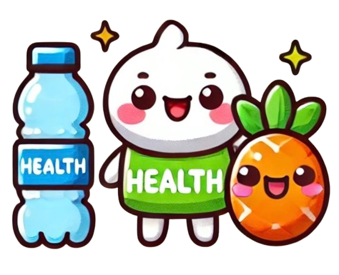

당신은 ..
웰핑
🎉 축하합니다!
짜고 달지 않는 식습관으로 건강을 위해 노력하는 당신을 웰핑(Well-Peing)으로 임명합니다!
달고 짜게 먹는 식습관은 다양한 대사질환에 노출될 위험이 큰 만큼,
우리의 웰핑들은 방심하지 말고 지금처럼 건강한 식습관을 유지하기 위해 노력해야 해요.
그러면 앞으로도 실생활에서 당류와 나트륨 섭취를 줄이기 위한 식생활습관에 대해 말씀드릴게요!! 😊
웰핑이들의 더욱! 건강한 식습관을 위한 식생활 꿀팁
🥄 나트륨 줄이기! 앞으로도 더욱 건강해지기 위한 꿀팁
짜게 먹는 습관, 고치기 어렵다고요? 걱정 마세요. 나트륨 섭취를 자연스럽게 줄이면서도 맛있고 건강하게 먹는 법, 알려드릴게요! 식품을 구매할 때, 조리할 때, 섭취할 때를 기준으로 차근차근 설명해드릴테니 꼭 실천해보도록 해요:)
[구매할 때]
1. 가공식품, 뒷면의 '나트륨 함량' 꼭 확인하기 
우리가 먹는 나트륨의 대부분은 가공식품에서 온다는 사실, 알고 계셨나요?
햄, 소시지, 라면 같은 가공식품을 고를 땐, 나트륨 함량이 낮은 제품을 선택하세요.
작은 습관이 큰 변화를 만듭니다!
[조리할 때]
2. 짠맛 대신 감칠맛과 신맛을 활용하여 요리하기 
“소금을 덜 넣으면 싱겁지 않나요?” 걱정되신다면 감칠맛이나 신맛을 활용해보세요!
양파, 마늘, 표고버섯, 다시마, 발사믹 식초와 같은 재료는 소금 없이도 음식의 풍미를 살려줍니다.
짠맛을 줄이고 감칠맛이나 신맛을 더하면, 나트륨은 낮추고 맛은 UP!
3. 저나트륨 조리법으로 맛있게 요리해요 
우선 저염간장, 저염된장 등 염분이 적은 양념을 사용해보세요. 그리고, 국이나 찌개는 다 끓인 후 제일 마지막에 간을 맞추는 것을 추천합니다.
음식이 뜨거울 때는 덜 짜게 느껴지기 때문에 소금을 더 넣게 될 수 있으니 주의하세요.
4. 조리 시 조림보다는 구이를 활용해요 
조림은 음식에 간장, 설탕, 소금 같은 양념을 넣고 졸이는 방식이에요. 조림의 형태로 음식을 섭취하게 되면, 양념이 음식에 깊게 배어들면서 나트륨과 당분 섭취량이 증가할 수 있습니다.
특히, 국물을 많이 졸일수록 양념이 더 농축되어 나트륨 함량이 높아지게 됩니다.
반면, 구이는 양념 사용을 최소화하거나 따로 곁들일 수 있어 나트륨과 당분 섭취를 줄이는 데 유리해요.
5. 김장을 할 때는 액젓의 사용을 줄이거나, 저염 김치를 사용해요 
김장할 때 사용되는 액젓은 김치의 감칠맛을 더해주지만, 동시에 나트륨 함량이 높습니다.
액젓의 사용을 줄이는 대신, 무채, 쪽파 등의 양념 속을 풍부하게 넣어 김치의 풍미를 살려보세요.
자극적이지 않고 깔끔하며, 언제 먹어도 아삭하고 시원한 식감까지 느낄 수 있어요.
만약 김장을 하지 않는다면, 저염김치를 섭취하는 것이 나트륨 저감화를 위해 가장 좋겠죠?
조리 방법에서 나트륨 저감화를 위한 이러한 디테일이 여러분의 건강한 식습관을 평생 가게 할 수 있답니다!
[섭취할 때]
6. 식사 시에 채소를 함께 먹기
염분이 많은 음식으로 식사를 할 때에는 채소와 함께 곁들여서 드세요.
채소에 많이 들어있는 칼륨은 몸에 쌓인 나트륨을 배출해 주고, 체내 균형을 맞추는 데 도움을 준답니다.
식사를 할 때 채소를 함께 먹는 습관, 맛도 좋고 건강에도 딱!
7. 국과 찌개는 국물은 적게, 건더기 위주로 먹어요 
국과 찌개의 국물에는 간을 맞추기 위해 많은 양의 소금이나 간장, 된장 등이 사용되며, 이는 나트륨 함량이 높아지는 주된 원인이에요.
국물 자체를 많이 섭취하면 나트륨 섭취량이 크게 증가해 건강에 부담이 될 수 있답니다.
이렇게 간단한 팁들만 실천해도 나트륨 섭취를 건강하게 줄일 수 있어요.
🍭 달콤함 줄이고 건강 더하기! 당 섭취 줄이는 꿀팁
달콤한 간식과 음료, 참 맛있지만... 과하게 먹으면 건강에 빨간불이 켜질 수 있어요! 지금처럼만 단 음식의 섭취량을 줄이시고, 이외에도 건강도 지키고 맛도 놓치지 않는 당 섭취 줄이는 방법들을 알려드릴게요.
[구매할 때]
1. 하루 50g, 당 섭취량을 기억하세요! 
하루 권장 첨가당 섭취량은 50g입니다. 첨가당은 하루에 50g을 넘지 않는 것이 좋아요.
가공식품을 구매할 때는 영양성분표에서 당류 함량을 꼭 확인하는 습관을 들여보세요. 작은 실천이 건강을 지킵니다!
2. 카페에서 음료 구매 시 ‘덜 달게’를 요청해요.☕
또, 커피나 음료를 주문할 땐 “당도는 낮게요!”
당도를 조절하면 맛도 깔끔해지고 건강도 챙길 수 있답니다.
[조리할 때]
3. 설탕 대신 대체 감미료를 활용해요! 
요리나 음료를 만들 때 설탕 대신 스테비아나 에리스리톨 같은 칼로리가 낮은 대체 감미료를 써보세요.
단맛은 그대로인데 칼로리는 뚝! 건강한 달콤함을 즐길 수 있는 꿀팁입니다.
그러나 이러한 대체 감미료에 의존하는 것도 좋지 않다는 사실! 뭐든 적당히 사용하는 것이 제일 좋아요:)
[섭취할 때]
4. 간식을 먹을 때, 가공식품 대신 자연식품으로 바꿔보세요! 
첨가당이 들어있는 초콜릿, 쿠키와 같은 간식에 자주 손이 가는 여러분!
이제는 간식으로 견과류나 과일처럼 자연 그대로의 식품을 섭취하는 것은 어떨까요?
첨가당이 다량 함유된 가공식품보다 과일과 견과류에 포함된 당류의 함량이 훨씬 적은 만큼,
적당량의 견과류(하루에 아몬드 23알 내외, 땅콩 10알 내외 등)나 사과 반쪽으로 비타민·무기질 등의 영양소를 보충하고 달콤하면서도 건강한 간식을 즐겨보아요!
5. 단맛 + 신맛 = 더욱 달달한 맛!🍋
신맛은 혀에 강렬한 자극을 주어 단맛이 더욱 두드러지게 느껴지도록 도와줍니다.
신맛은 혀의 미각 수용체의 반응을 조절하여 단맛에 대한 민감도를 높이기 때문이에요.
레몬에 설탕을 넣으면 단맛이 더욱 강조되듯이, 단 음식이 너무 먹고 싶을 때는 신 음식을 함께 섭취함으로써 첨가당의 섭취를 줄여보는 건 어떨까요?
6. 설탕 대신 양파, 파로 단맛을 내세요.🧅
양파를 잘게 썰어 천천히 볶으면 자연적인 단맛이 강화됩니다.
대파를 기름에 살짝 볶거나 구우면 은은한 단맛과 풍미가 살아납니다.
이는 “메일라드 반응”과 “캐러멜화 반응” 덕분인데요.
국, 찌개, 볶음 요리 등 다양한 요리에 양파와 파를 설탕 대체재로 활용해보세요.
7. 음료 대신 물!
달콤한 음료를 생수로 바꿔보세요! 처음엔 밍밍하게 느껴질 수 있지만, 점점 습관이 되면서 “이게 더 개운한데?”라는 생각이 들 거예요.
만약 생수만으로는 부족하다면, 얼음물 등을 통해 물의 온도를 조절하거나,
칼로리가 없는 티백 또는 비타민 C가 풍부한 레몬을 활용해보세요.
달콤한 유혹, 현명하게 선택하는 습관이 중요해요!